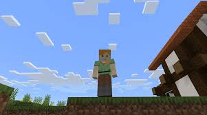

alex

Alex es la segunda protagonista principal de Minecraft y fue creada como contraparte de Steve en Septiembre de 2014, y más tarde, Alex se lanzó en ambas consolas, Xbox y Playstation, primero y luego en dispositivos móviles, Pocket Edition, en el verano. Según el artículo de WIRED publicado el 28 de abril de 2015, existía la preocupación por la falta de representación en la diversidad de la base de juego de Minecraft, por lo que el personaje de Alex será una adición complementaria a Minecraft como un personaje asignado al azar, con "brazos más delgados, cabello más rojo y una cola de caballo", según Mojang.
Capacidades Físicas Sobrehumanas, Intelecto de Genio, Maestría en Armas, Almacenamiento Dimensional (Mediante el inventario), Curación (Se cura naturalmente de heridas), Inmortalidad (Tipos 2, 3 y 7; Puede sobrevivir a tener decenas de flechas clavadas en su cuerpo. Depende del Jugador), Regeneración (Media; Puede regenerarse de flechas clavadas en su cabeza), Negación de Regeneración (Hasta Alta-Media; Por lograr matar a los Lepismas), Creación de Portales limitada (Puede crear portales al Nether), Manipulación de la Vida (Puede darle vida a bloques para crear Golems de Hierro y Golems de Nieve), Resurrección (Puede resucitar al morir, esto es canónico debido a mecánicas como la Maldición de Desaparición),